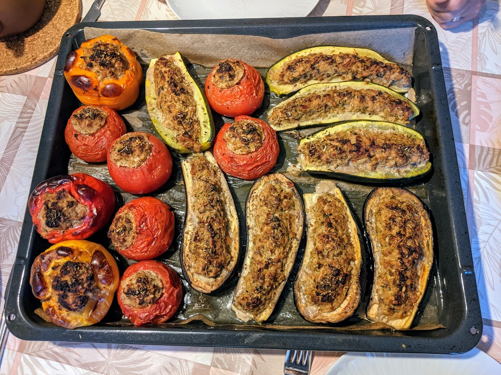

Légumes farcis

Pour trois personnes :
- 250g de chair à saucisse
- Une petite tranche de pain de campagne
- Un oignon
- Une échalote
- Une gousse d'ail
- Des herbes (voir plus bas)
- Des légumes (voir plus bas)
- Laver, puis évider les légumes : enlever le pied des champignons, les pépins des tomates, creuser une tranchée au milieu des aubergines et des courgettes coupées en deux dans le sens de la longueur, etc.
- Réduire la tranche de pain en miettes, éplucher puis presser l'ail, émincer oignon et échalotes, et broyer ce qu'on a récupéré dans les légumes.
- Mélanger tous les ingrédients (sauf les légumes évidés). Saler, poivrer, faire préchauffer le four à 200°C.
- Disposer la farce obtenue dans les légumes. Arroser le tout d'un filet d'huile d'olive, enfourner pour 1h15 (45 minutes pour des champignons).
- Servir chaud.
Remarque 1 : on peut accompagner ça de riz, auquel cas les proportions nourrissent plutôt 4 personnes.
Remarque 2 : concernant les herbes, les herbes de Provence vont bien avec les tomates, les poivrons ou les aubergines, le persil va bien avec les champignons, l'estragon accompagne bien les courgettes. Ne pas trop mélanger les herbes, sinon on ne sent plus vraiment chacune séparément.
Remarque 3 : il faut 20g de chair à saucisse pour remplir un gros champignon, 70g pour une grosse tomate, 80g pour une courgette, 100g pour un poivron ou une aubergine.
Remarque 4 : si on a peur d'avoir trop de farce, on peut prévoir des poivrons en plus. Vu qu'il n'y a pas besoin d'évider leur chair et de l'ajouter à la farce, on peut décider à la dernière minute d'en ajouter pour finir la farce.